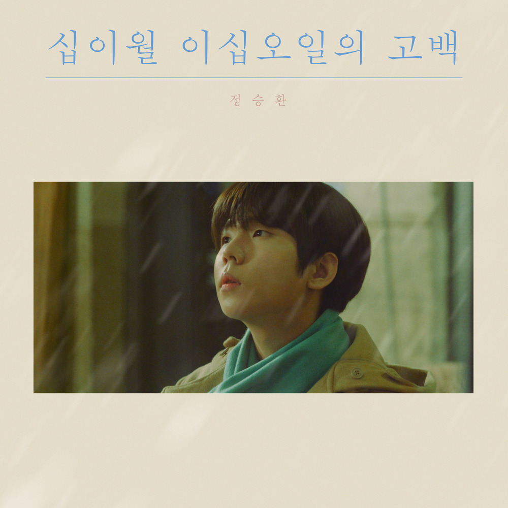

안녕하세요 라보엠입니다.
벌써 겨울이 코앞으로 다가왔네요. 겨울이 다가오면 마음을 따뜻하게 해주는 노래를 찾게 되는데요. 오늘은 정승환의 안녕, 겨울이라는 곡을 소개해드리겠습니다. 이 노래는 겨울의 정서를 아름답게 담아낸 감성적인 발라드로, 정승환의 다른 겨울 노래 눈사람과 함께 많은 이들의 마음을 울린 노래입니다..

안녕, 겨울은 정승환의 앨범 십이월 이십오일의 고백(2019)에 수록된 곡으로, 4분여 동안 겨울의 감성을 전달합니다. 정승환의 특유의 감미로운 목소리와 서정적인 가사가 어우러져 겨울의 쓸쓸함과 그리움을 잘 표현하고 있습니다.
정승환 2019 콘서트 Live - 안녕, 겨울
안녕, 겨울 노래 가사
1.
유난히 바람이 찬 어느 날
무심한 계절처럼 그대가 오겠죠
알고 있어요 또 멀어질 거란 걸
천천히 잊을게요
그대 없이도 혼자 남지 않게
또 겨울이 오네요
시리도록 하얀
첫눈이 내리면
그대도 올까요
여전히 나 혼자
끝맺지 못한 말
여기에 남겨요
늦었지만 사랑해요
2.
하루씩 그대를 잊어가요
그보다 더 슬픈 건 무뎌짐이겠죠
알고 있어요 늘 같은 자리란 걸
아무리 돌아서도
그댈 향해 서 있는 그게 나라는 걸
또 겨울이 오네요
슬프도록 하얀
첫눈이 내리면
그대도 볼까요
어쩌면 나처럼
울고 있을까요
그대의 잘못이
아닌 걸요
서로의 손을 이제는 놓기로 해요
천천히 사라질 온기로
마지막 인사를 나눠요
그동안 고마웠어요
그대여 이젠 안녕
어디에 있든 어떤 모습이든
그대로의 그댈 사랑해요
닿지 않겠지만
늦더라도 부디 행복해요
이 노래의 가사는 겨울과 이별을 연관 지어 표현하고 있습니다. 차가운 바람과 함께 찾아오는 겨울처럼, 사랑하는 사람과의 이별도 예고 없이 찾아옵니다. 가사에는 이별의 아픔을 받아들이고 서서히 극복해 나가는 과정이 담겨 있습니다.
특히 "천천히 잊을게요"라는 구절은 많은 리스너들의 공감을 얻고 있습니다. 이별의 아픔을 한 번에 극복하기는 어렵지만, 시간이 지나면서 서서히 치유될 수 있다는 희망적인 메시지를 전달합니다.
음악적 특징
정승환의 목소리는 이 노래의 감성을 더욱 극대화시킵니다. 부드럽고 따뜻한 음색으로 겨울의 쓸쓸함과 그리움을 섬세하게 표현해냅니다. 피아노 반주와 함께 시작되는 멜로디는 눈이 내리는 겨울 풍경을 연상시키며, 점점 고조되는 후반부는 감정의 절정을 잘 표현하고 있습니다.
안녕, 겨울은 단순한 계절 노래를 넘어 우리의 일상과 감정을 섬세하게 표현한 곡입니다. 겨울이 다가올 때마다 많은 이들의 플레이리스트에 빠지지 않고 등장하는 이유가 바로 여기에 있겠죠. 여러분도 이 겨울, "안녕, 겨울"과 함께 따뜻한 시간 보내시길 바랍니다.